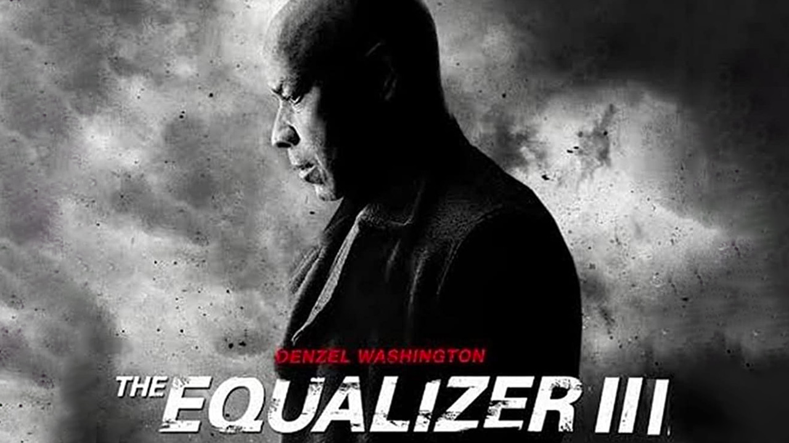
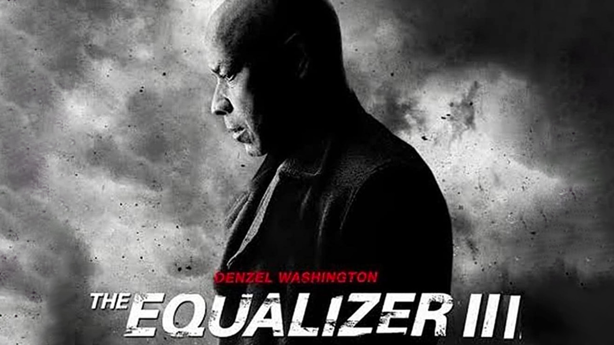

Stranger Things é uma série de ficção científica sobrenatural da Netflix, criada pelos irmãos Duffer. A trama se passa na cidade fictícia de Hawkins, Indiana, em 1983, e conta a história do desaparecimento de Will Byers, um menino de 12 anos.
Assistir Mais informaçõesStranger Things é uma série de ficção científica sobrenatural da Netflix, criada pelos irmãos Duffer.
Gênero: Ação
Ano de Lançamento: 2015


 
